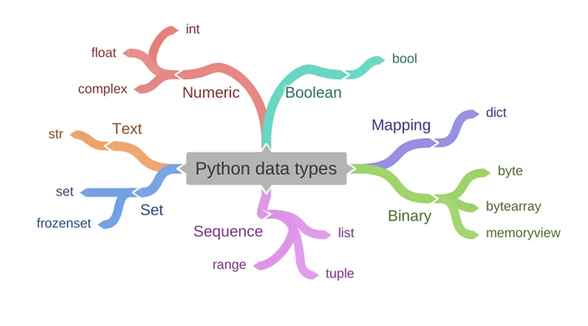

Python
Высокоуровневый язык программирования общего назначения с динамической строгой типизацией и автоматическим управлением памятью, ориентированный на повышение производительности разработчика, читаемости кода и его качества, а также на обеспечение переносимости написанных на нём программ. Язык является полностью объектно-ориентированным в том плане, что всё является объектами. Необычной особенностью языка является выделение блоков кода пробельными отступами. Синтаксис ядра языка минималистичен, за счёт чего на практике редко возникает необходимость обращаться к документации. Сам же я.зык известен как интерпретируемый и используется в том числе для написания скриптов. Python обычно используется для разработки веб-сайтов и программного обеспечения, автоматизации задач, анализа данных и визуализации данных. Поскольку его относительно легко выучить

Типы и структуры данных

Python поддерживает динамическую типизацию, то есть тип переменной определяется только во время исполнения. Поэтому вместо «присваивания значения переменной» лучше говорить о «связывании значения с некоторым именем». К примитивным типам в Python относятся булевый, целое число произвольной точности, число с плавающей запятой и комплексное число. Из контейнерных типов в Python встроены: строка, список, кортеж, словарь и множество[47]. Все значения являются объектами, в том числе функции, методы, модули, классы.